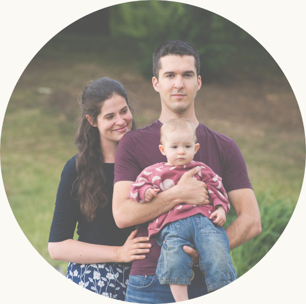

Budeme se brát!
Káťa & Max & Róza
8.10.2022, 11:00
Statek Smrčiny, Želiv 91

Budeme se brát!
Káťa & Max & Róza
8.10.2022, 11:00
Statek Smrčiny, Želiv 91
Milé svatebčanky, milí svatebčani a milá svatebčančata.
Naše svatba se nezadržitelně blíží a určitě jste zvědaví, co Vás čeká. Tato stránka Vám poskytne všechny důležité informace.
Moc se na Vás těšíme a doufáme, že si s námi užijete tento radostný den.
Svatba se bud konat na Statku Smrčiny, který se nachází několik kilometrů od města Želiv. Přesnou polohu najdete na mapě.
Nejlepší způsob jak se na místo dopravit je autem. Na na statek vedou dvě příjezdové cesty, lepší je ta vedoucí z obce Bolechov. Pozor, některé navigace Vám budou tvrdit, že tam žádná cesta není :)
Parkovací místa jsou přímo u statku a budou označena cedulemi.
Pokud chcete využít hromadnou dopravu, nejlepší je dojet do Humpolce. Ozvěte se nám a domluvíme se, jak Vás dostat z Humpolce na statek.
Svůj příjezd na statek směřujte přibližně na 10:00, abyste měli dost času se rozkoukat a dát si koláček.
Obřad začne v 11:00. Pokud to alespoň trochu umožní počasí, bude probíhat venku.
Oddá nás Jaroslav Pechar, farář Českobratrské církve evangelické.
Stejně jako celá svatba, se obřad ponese v nepříliš formálním duchu. Počítáme s přítomností dětí a psů a nebude nám vadit, když nebudou celou dobu potichu jako myšky.
Aby se jenom nejedlo a nepilo, připravujeme pro Vás soutěž pro dospělé i děti s tombolou (účast dobrovolná), fotokoutek, večerní posezení u ohně a další kratochvíle. Fajnšmekři mohou využít saunu s jezírkem.
Mezi svatebčany bude veliké množství rodičů s dětmi a my jsme jedni z nich. Myslíme na Vaše potřeby, a proto připravujeme:
Pokud máte nějaké speciální potřeby, neváhejte se na nás obrátit.
Hosty bez dětí prosíme o trpělivost :)
Oběd i večeře budou probíhat formou rautu.
Protože neznáme potřeby našich nejmenších strávníků, rozhodli jsme se pro ně nic speciálního nechystat. Pokud si nevyberou z dospělého menu, na místě můžete využít kuchyňku s mikrovlnkou, lednicí a rychlovarnou konvicí.
Jídlo zajišťuje firma Friendfood.
Ubytování na místě je možné ve vlastním stanu venku, nebo ve spacáku na půdě ve společenské místnosti.
Na statku je několik pokojů, které jsme vyhradili především pro rodiny s malými dětmi. Těm kteří můžou počítat s vlastním pokojem se ozveme.
Pokud na Vás nevyšel pokoj, nemáte vlastní stan nebo potřebujete půjčit karimatku, napište nám.
Naše svatba je neformální událostí, a proto slavnostní obleky a večerní šaty můžete nechat doma. Myslete především na svoje pohodlí. My se tím budeme také řídit, nečekejte frak ani šaty s vlečkou.
Slavnost se odehrává na bývalém statku mezi poli a lesy. Pokud bude pršet, bude bahno. Mějte s sebou věci na převlečení podle počasí a případně i večer k ohni.
Vnitřní prostory jsou vytápěné, takže když bude ošklivo, mrznout nebudeme.
Největším darem pro nás je, že si s námi užijete naši veselku :)
Žijeme spolu už nějaký ten rok a naše domácnost je zařízená. Proto nám prosím nedávejte věcné dary.
Budeme rádi když nám napíšete vzkaz do vzpomínkové knihy a pokud chcete, můžete nám pomoct naplnit prasátko ;)
V den obřadu prosíme kontaktujte přednostně naše svědky: